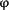

|
|
Neurobiol Dis. Author manuscript; available in PMC 2009 June 22. Published in final edited form as: | PMCID: PMC2700002 NIHMSID: NIHMS28314 |
Abnormal motor phenotype in the SMNΔ7 mouse model of spinal muscular atrophy Matthew E. R. Butchbach,1 Jonathan D. Edwards,1 and Arthur H. M. Burghes1,2,3 1 Department of Molecular and Cellular Biochemistry, College of Biological Sciences, The Ohio State University, Columbus, OH USA 2 Department of Neurology, College of Medicine, College of Biological Sciences, The Ohio State University, Columbus, OH USA 3 Department of Molecular Genetics, College of Biological Sciences, The Ohio State University, Columbus, OH USA Spinal
muscular atrophy (SMA) is recessive motor neuron disease that affects
motor neurons in the anterior horn of the spinal cord. SMA results from
the reduction of SMN (survival motor neuron) protein. Even though SMN is
ubiquitously expressed, motor neurons are more sensitive to the
reduction in SMN than other cell types. We have previously generated
mouse models of SMA with varying degrees of clinical severity. So as to
more clearly understand the pathogenesis of motor neuron degeneration in
SMA, we have characterized the phenotype of the SMNΔ7 SMA mouse which
normally lives for 13.6 ± 0.7 days. These mice are smaller than their
non-SMA littermates and begin to lose body mass at 10.4 ± 0.4 days.
SMNΔ7 SMA mice exhibit impaired responses to surface righting, negative
geotaxis and cliff aversion but not to tactile stimulation. Spontaneous
motor activity and grip strength are also significantly impaired in
SMNΔ7 SMA mice. In summary, we have demonstrated an impairment of
neonatal motor responses in SMNΔ7 SMA mice. This phenotype
characterization could be used to assess the effectiveness of potential
therapies for SMA. Keywords: spinal muscular atrophy, motor neuron disease, behavior, development, sample size estimation, Fox battery, natural history Proximal
spinal muscular atrophy (SMA) is an autosomal recessive degenerative
disease characterized by selective loss of α motor neurons of the
anterior horn of the spinal cord ( Crawford and Pardo, 1996).
The loss of motor neurons results in atrophy of limb and trunk muscles.
SMA has a different spectrum of clinical signs which can be roughly
divided into three groups based on age of onset and clinical severity ( Crawford and Pardo, 1996). SMA results from the loss or mutation of the SMN1 (survival motor neuron 1) gene but retention of SMN2 ( Lefebvre et al., 1995). SMN is ubiquitously expressed and its expression is depressed in all SMA tissues including motor neurons ( Coovert et al., 1997; Lefebvre et al., 1997). In humans, the SMN gene is duplicated to yield two SMN genes ( SMN1 and SMN2). SMN1 and SMN2 differ by a single nucleotide (C→T) within an exon splice enhancer of exon 7 ( Lorson et al., 1999; Monani et al., 1999). Transcripts derived from SMN1 contain exon 7 while most of the transcripts from SMN2 lack exon 7. The severity of the SMA phenotype depends on the copy number of SMN2 and the levels of SMN protein ( Coovert et al., 1997; McAndrew et al., 1997; Lefebvre et al., 1997). SMN
is required for the assembly of small nuclear ribonucleoproteins
(snRNPs) which are essential for splicing of premessenger RNA
transcripts ( Liu and Dreyfuss, 1996). snRNP biogenesis is defective in cell lines from SMA patients ( Pellizzoni et al., 1999; Wan et al., 2005); Shpargel and Matera ( Shpargel and Matera, 2005),
however, demonstrated that some SMN mutants found in severe SMA
patients have normal snRNP biogenesis. Furthermore, a recent study using
a zebrafish model for Smn knockdown show that there is a novel function
in motor neuron axons that is independent of snRNP biogenesis ( Carrel et al., 2006). The mechanism which accounts for the motor neuron specificity of SMA is presently unclear. Unlike humans, mice carry only one SMN gene ( mSmn) which is equivalent to SMN1 ( DiDonato et al., 1997; Viollet et al., 1997).
Loss of mSmn results in embryonic lethality in the mouse suggesting
that the mSmn gene product is essential for cell function and survival ( Schrank et al., 1997).
Conditional knockdown of mSmn in various cell types including neurons,
differentiated myocytes and hepatocytes also leads to death of those
cells ( Cifuentes-Diaz et al., 2002; Nicole et al., 2003; Vitte et al., 2004).
Furthermore, reduction of SMN protein levels in zebrafish results in
abnormalities in motor neuron-specific axon pathfinding ( McWhorter et al., 2003). In developing motor neurons with low SMN levels, axons are truncated and branch excessively. Insertion of SMN2 into mSmn null mice by transgenesis rescues the embryonic lethality phenotype ( Monani et al., 2000). Mice with low copy numbers (i.e. 1–2) of SMN2 develop severe (type I-like) SMA and die at 6–8 days ( Monani et al., 2000; Hsieh-Li et al., 2000) while those mice with higher copy numbers (i.e. 8) of SMN2 are phenotypically normal when compared to nontransgenic littermates ( Monani et al., 2000) demonstrating that the SMN2 gene product can correct the SMA phenotype. Introducing SMN lacking exon 7 (SMNΔ7) into SMN2;mSmn−/− mice partially ameliorates the SMA phenotype and these mice die at 14–15 days ( Le et al., 2005). The SMNΔ7;SMN2;mSmn−/−
mice show that SMNΔ7 is functional but it does not produce enough
functional SMN protein to completely rescue SMA-like motor neuron
degeneration. Introduction of a missense mutation (SMN(A2G)) found in
type III SMA patients ( Parsons et al., 1998) into SMN2;mSmn−/− mice modulates the SMA phenotype such that the transgenic mice can survive for over 1 year (type III-like SMA) ( Monani et al., 2003). SMN(A2G) alone is not sufficient to rescue the embryonic lethality observed in mSmn null mice. There are now mouse models of SMA with varying degrees of phenotypic severity (reviewed in Butchbach and Burghes, 2004).
These models are currently being used to test various therapies for the
amelioration of the SMA phenotype. In order to properly assess the
therapeutic effect of a given agent, a thorough understanding of the
motor degenerative phenotype is needed. In this study, we characterize
the motor phenotype of SMNΔ7 SMA mice. Motor behaviors such as surface
righting reflex, negative geotaxis, spontaneous motor activity and grip
strength are severely affected in SMNΔ7 SMA mice. Additionally, we show
two applications of motor behavior analysis: identification of SMA mice
and design of therapeutic screening experiments by determining the
number of mice that would be required to observe a certain beneficial
effect on a phenotype. Animals Intermediate SMA mice were generated from males and females of the genotype SMN2+/+;SmnΔ7+/+;mSmn+/− (line 4299; FVB.Cg-Tg(SMN2*delta7)4299Ahmb Tg(SMN2)89Ahmb Smn1tm1Msd).
These mice originated from our colony but can be obtained from Jackson
(#005025). Mice were maintained on a 12 h:12 h light:dark cycle (light
period 06:00 until 18:00) with ad libitum access to food and
water. All breeding dams were provided with nesting material before
parturitation and delivered their pups spontaneously. The date of birth
was designated as postnatal day (PND) 01. Each pup in the litter was
marked with an identification code at PND01. All experiments were
conducted in accordance with the protocols described in the National
Institutes of Health Guide for the Care and Use of Animals and were approved by the Ohio State University Institutional Laboratory Animal Care and Use Committee. Genotyping Neonatal
offspring were genotyped using a PCR-based assay on genomic DNA from
tail biopsies—obtained after death—as described previously ( Le et al., 2005; Butchbach et al., 2007). To determine the presence of mSmn
knockout allele, the following PCR primers were used: NeoB,
5′-gcagctgtgctcgacgttgtc-3′ and SmnInt2R, 5′-taagaaagcctcgacgttgtc-3′
(PCR conditions: 95°C for 4 min, 35 cycles of 95°C for 1 min, 63°C for
1.5 min and 72°C for 1 min followed by a final extension at 72°C for 4
min). PCR primers designed to detect an intact mSmn allele were used to
distinguish SMA pups from carrier pups: mSmnEx2AF,
5′-ttttctccctcttcagagtgat-3′ and mSmnEx2BR, 5′-ctgtttcaagggagttgtggc-3′
(PCR conditions: 95°C for 4 min, 32 cycles of 95°C for 1 min, 57°C for 1
min and 72°C for 1 min followed by a final extension at 72°C for 4
min). Intermediate SMA mice ( SMN2+/+;SmnΔ7+/+;mSmn−/−) would be positive for the mSmn knockout PCR reaction and negative for the intact mSmn PCR reaction while carrier mice ( SMN2+/+;SmnΔ7+/+;mSmn+/−) would be positive for both the mSmn knockout and intact mSmn PCR reactions. Normal mice ( SMN2+/+;SmnΔ7+/+;mSmn+/+)
would test negative for the mSmn knockout PCR but positive for the
intact mSmn PCR reaction. The sex of the pups was determined by PCR for
the male-specific Sry gene. The following PCR primers were used ( McClive and Sinclair, 2001):
SryF, 5′-tcatgagactgccaaccacag-3′ and SryR, 5′-catgaccaccaccaccaccaa-3′
(PCR conditions: 94°C for 5 min, 30 cycles of 94°C for 1 min, 67°C for 1
min and 72°C for 1 min followed by a final extension at 72°C for 10
min). Behavior Analysis Unless
otherwise stated, each mouse pup was analyzed daily for body mass as
well as changes in behavior until the last SMA pup in that litter has
died. Pups were also inspected daily for the following developmental
landmarks: incisor eruption, hair growth and eyelid opening. The tester
was blinded to the genotype of each mouse pup. All tests were conducted
during the light period between 14:00 and 17:00. The behavior tests used
were based on modifications to the Fox battery ( Fox, 1965) which uses reflex-based assays to monitor the maturation of the motor and sensory components of the nervous system ( Le Roy et al., 2001; Dierssen et al., 2002).
Motor activity was captured using a Canon digital video camcorder (NTSC
ZR60) and analyzed after motor behavior was recorded. The observer was
blinded to the genotype of each mouse. Righting Reflex Each
pup was turned onto its back and the time it takes to stably place all
four paws on the ground was recorded (cutoff time of 60 s). Righting
reflex latency was recorded daily starting at PND02 until PND08 or a
latency less than 60 s was observed for 2 consecutive days, whichever
occurred first. Clasping Response Each
pup was held by the scruff of its neck and footpads of the forelimbs
and hindlimbs were gently stroked with a toothpick. The presence or
absence of a clasping response was recorded. Clasping responses were
measured from PND02 until PND08. Negative Geotaxis Each
pup was placed on a 45° incline with its head pointing down the
incline. The latency for turning 180° (i.e. with its head pointing up
the incline) was recorded (cutoff time of 180 s). If a pup could not
maintain a righted position during the assay, then a maximum latency was
recorded. Negative geotaxis responses were measured from PND04 until
PND08. Cliff Aversion Each
pup was placed on the edge of a cliff with its head and forepaws
hanging over the edge to determine if the pup would have turned and
crawled to safety. Cliff aversion was analyzed between PND06 and PND08. Visual Placing Response On
the day after eyelid opening, each pup was suspended by its tail and
lowered towards the tip of a pencil. The pencil tip did not touch the
vibrissae of the pup. If the pup extended its forepaws toward the tip,
then a positive response was recorded. Spontaneous Locomotor Activity Each pup was placed in the center of an arena where the floor has been divided into 28 2.5-cm2
grids (7×4). The floor of the arena was covered with home bedding. Each
pup was videotaped for 60 sec and the number of grids crossed during
this time was counted as well as the latency for walking a distance
greater than its body length. The number of times each mouse slipped
from its righted position was also recorded. Spontaneous locomotor
activity measures were collected using Stopwatch+ (Center for Behavioral
Neuroscience, Atlanta, GA) and were monitored on PND04, PND07, PND11
and PND14. Pivoting Each pup was placed in the center of an arena where the floor has been divided into 28 2.5-cm2
grids (7×4). The floor of the arena was covered with home bedding. Each
pup was videotaped for 60 sec and the number of times the pup turned
90°C (pivots) was counted during this time. Pivoting was recorded using
Stopwatch+ and was monitored on PND04, PND07, PND11 and PND14. To
minimize the stress on the pup, the spontaneous locomotor activity and
pivoting tests was conducted simultaneously. Homing Test Each pup was separated from its dam for at least 20 min and then transferred to an arena with the floor divided into 28 2.5-cm2
grids (7×4). Beddings from the home cage was evenly spread across one
side of the arena (1×4) and the pup was placed on the opposite side. The
time required to place both forepaws within the home scent area was
recorded (cut off time of 180 s) along with the number of grids entered
during the test period. The measures assayed during the homing test were
recorded with Stopwatch+. The homing test was performed on PND11 and
PND14. Hindlimb Splay Each
pup was suspended by its tail for 5 sec and observed for splaying of
hindlimbs. Hindlimb splay was examined on PND11 and PND14. Grasping Response Each pup was placed on a 1-cm2
wire mesh and gently dragged horizontally along the mesh. Any
resistance felt by the observed was scored as a positive response.
Grasping response was monitored on PND11 and PND14. Grip Strength Grip strength was assessed using a suspension test. Each pup was placed on a wire mesh (1 cm2
grids) and the mesh with the mouse was inverted. The latency for the
pup to release the mesh was recorded. Grip strength was measured on
PND11 and PND14. Statistical Analysis Parametric data are expressed as means ± standard error and were analyzed using one-way ANOVA with a Bonferonni post hoc
test. In most cases, repeated measures data were subjected to a general
linear model (GLM) analysis with sex and/or genotype as the
between-subject factors and age (PNDs) as the within-subjects factors.
For GLM analysis, the data was first analyzed using Mauchly’s test of
sphericity followed by ANOVA. Nonparametric data are expressed as a
percentage of each genotype which has that score. All nonparametric data
was analyzed in three pairwise combinations (SMA vs. carrier, SMA vs.
normal and carrier vs. normal) using the Mann-Whitney U test. For
identification of SMA mice by phenotype (i.e. absence of righting reflex
or negative geotaxis responses, 2×2 contingency tables were generated
and analyzed by Pearson χ2 with the strength of association being determined by . Kaplan-Meier analysis was performed on lifespan and onset of body mass loss data using the Mantel-Cox log rank post hoc
test. Additionally, onsets of eyelid opening and visual placing
response underwent Kaplan-Meier analyses using eyelid opening and visual
placing response as the survival functions. All statistical analyses
were performed with SPSS v. 14.0. Using
power analysis, we calculated the number of subjects needed to detect a
10%, 20%, 50% or 100% change in each of the behavioral data collected.
In all cases, α=0.05 and power (1−β)=0.80. For parametric data, the
sample size was calculated using the following equation: n = 1 + 2C(s/d) 2 (equation 2 in Dell et al., 2002;
s=standard deviation, d=difference and C=7.85 for α=0.05 and 1−β=0.80).
For survival and onset of body mass loss data, the following equation
was used for calculating sample size: n = (2s 2C 2)/d 2 (equation 2 in Wittes, 2002). Survival, growth curves and general appearance Newborn pups ( n=82) from 10 litters of SMNΔ7 carrier ( SMN2+/+;SmnΔ7+/+;mSmn+/−) matings were analyzed for survival as well as changes in motor behavior. Of these pups, 24 had SMA ( SMN2+/+;SmnΔ7+/+;mSmn−/−), 35 were carriers and 23 were normal ( SMN2+/+;SmnΔ7+/+;mSmn+/+).
Within this testing group, the average lifespan of SMNΔ7 SMA mice was
13.6 ± 0.7 days, which is in close agreement with previous results ( Le et al., 2005).
Male SMNΔ7 SMA mice tended to live longer on average than their female
littermates (15.0 ± 0.6 days versus 12.5 ± 1.2 days), however, this
trend was not statistically significant (; χ 2=0.834,
p=0.36). There is no correlation between the mass of SMNΔ7 SMA mice at
birth and their lifespans (Pearson R = 0.054). The size of the litter
has no correlation with lifespans of SMNΔ7 SMA mice (Pearson R =
−0.026). Additionally, maternal age has no effect on the survival of
SMNΔ7 SMA mice (Pearson R = 0.176). During
the early stages of the disease—i.e. PND02-PND07, SMNΔ7 SMA mice are
not significantly different in appearance aside from their smaller size
when compared to their carrier and normal (i.e., non-SMA) littermates ().
In fact, the appearance of body fur and the eruption of incisors occur
in SMNΔ7 SMA mice at the same times as for non-SMA mice. SMNΔ7 SMA mice
are smaller and appear emaciated at PND11 and PND14 ()
presumably due to neurogenic muscle atrophy. Postnatal growth curves
were analyzed for SMNΔ7 SMA, carrier and normal mice of both sexes. Both
male and female carriers as well as normal pups have a continuous
growth curve (). The growth curves for both male and female SMNΔ7 SMA mice are different from their non-SMA littermates (testing day F13,858 = 1263, p < 0.001; testing day×genotype F65,858 = 43.2, p = 0.002). For male pups (),
the mean body masses between SMNΔ7 SMA and normal mice are significant
different beginning at PND03; however, the differences in mean body mass
between SMNΔ7 SMA and carrier mice are significant starting at PND05.
There is a significant difference in body mass between female SMNΔ7 SMA
mice and their normal littermates beginning at PND02 while body masses
of female SMNΔ7 SMA mice are significantly different from carrier mice
starting at PND03 ().
Male and female SMNΔ7 SMA mice continue to gain body mass until
PND09-PND11 where after they start losing body mass. The mean onset of
body mass loss ()
occurs later in male SMNΔ7 SMA mice (11.1 ± 0.3 days) than in female
SMNΔ7 SMA mice (9.8 ± 0.7 days after birth) but, as with survival, this
difference is not significant (χ2 = 0.252, p=0.62). Onset of Reflexological Responses Neonatal
mice will normally reposition themselves to a prone position within 5
seconds after being placed on their backs (righting reflex response).
The righting reflex response can be seen in pups as early as PND02.
However, only 10–30% of SMNΔ7 SMA are able to exhibit a righting reflex
response at any given age (;
Mann-Whitney U = 170.5, p < 0.001 when comparing SMA to carrier mice
at PND02; U = 87.5, p < 0.001 at PND03; U = 61.5, p < 0.001 at
PND04; U = 45.0, p < 0.001 at PND05; U = 43.0, p < 0.001 at PND06;
U = 32.0, p < 0.001 at PND07; U = 64.0, p < 0.001 at PND08). Of
the 24 SMA mice tested, only 7 were able to right themselves for two
consecutive days whereas all of the carrier and normal mice were able to
consecutively right themselves. Likewise, the amount of time required
for a mouse to reposition itself from a supine position (righting reflex
latency) is about 2.5–5-fold greater for SMNΔ7 SMA mice than for their
non-SMA littermates (; testing day F6,444 = 1.193, p < 0.001; testing day × genotype F6,444 = 3.605, p = 0.002). The sex of the mouse had no effect on the righting reflex response nor on its latency. As shown in ,
only 15–30% of SMNΔ7 SMA mice were able to elicit a proper response to
negative geotaxis (Mann-Whitney U = 212, p < 0.001 when comparing SMA
to carrier mice at PND04; U = 124, p < 0.001 at PND05; U = 84, p
< 0.001 at PND06; U = 100., p < 0.001 at PND07; U = 92, p <
0.001 at PND08); most non-SMA mice, on the other hand, demonstrate a
negative geotaxis response as early as PND04. There is no difference in
the proportion of carrier and normal mice who exhibited a negative
geotaxis response (e.g., Mann-Whitney U = 321.5, p = 0.313 at PND04).
The latency to a negative geotaxis response is significantly longer for
SMNΔ7 SMA mice (; testing day F4,296 = 2.47, p = 0.045; testing day × genotype F4,296 = 1.50, p = 0.203) than for non-SMA mice. When
placed over a ledge, neonatal mice will normally turn and move away
from ledge (cliff aversion). Fewer SMNΔ7 SMA mice were able to
successfully demonstrate a cliff aversion response ()
than non-SMA mice at PND06 (17.4%; Mann-Whitney U = 179.0, p < 0.001
when comparing SMA to carrier mice), PND07 (28.6%; U = 169.5, p <
0.001) and PND08 (33.3%; U = 112.0, p < 0.001). Onset of Sensory Responses The
onset of tactile sensory functions was assessed in SMNΔ7 SMA mice using
the clasping response which is characterized by clasping of either the
forepaw or hindpaw following gentle stimulation with a probe. Clasping
responses were elicited in neonates at PND02 until PND08. At all ages
tested, every mouse irrespective of genotype elicited a clasping
reaction in response to tactile stimulation of either the forelimb or
the hindlimb (data not shown). The
visual placing response was used to assess visual sensory function in
SMNΔ7 SMA mice. For visual placing, a mouse is suspended by its tail and
observed for the grasping of an object placed within their field of
vision. In order for this response to occur, the eyelids must first be
able to open. All of the SMNΔ7 carrier and normal mice were able to open
their eyelids. Of those SMNΔ7 SMA pups that lived to PND13, 52.6%
(10/19) were able to open their eyelids (Mann-Whitney U = 160, p <
0.001 when comparing SMA to carrier mice). Eyelid opening occurs on
average at PND14 for carrier and normal mice (14.0 ± 0.4 days for either
genotype) whereas the average onset of eyelid opening occurred later in
SMNΔ7 SMA mice (15.2 ± 0.4 days for SMA mice; p < 0.001). Visual
placing response was measured on the day following eyelid opening (i.e.
PND13-15). All of the SMNΔ7 carrier and normal mice elicited a response
to visual stimulation while only 10% (1/10; U = 16.0, p < 0.001 when
comparing SMA to carrier mice) of those SMNΔ7 SMA who were able to open
their eyelids elicited a visual placing response. Onset of Motor Responses Vectorial
movement is defined as locomotion in one direction at a distance
greater than its body length. Vectorial movement includes both
crawling—movement using both limbs but being supported only with the
forelimbs—and walking—movement and support with both limbs. Crawling
occurs at PND04 and PND07 while walking is observed at PND11 and PND14.
Nearly all of the SMNΔ7 SMA mice were not able to demonstrate vectorial
movement at PND04-PND11 while one-third of the SMNΔ7 SMA mice at PND14
were able to walk (). The vectorial movement latency (; testing day F3,114 = 14.94, p < 0.001; testing day × genotype F3,114
= 4.75, p = 0.004) is significantly longer for SMNΔ7 SMA mice than for
non-SMA mice at all ages tested. For SMNΔ7 SMA, the duration of movement
is significantly shorter than it is for non-SMA mice (; testing day F3,114 = 69.3, p < 0.001; testing day × genotype F3,114 = 49.6, p < 0.001). Amongst non-SMA mice, movement latency decreases (F3,87 = 29.6, p < 0.001) and the movement duration increases (F3,87 = 198.4, p < 0.001) with time. Spontaneous
motor activity, as monitored by counting the number of grids crossed
within one minute, was significantly lower in SMNΔ7 SMA mice than their
non-SMA littermates at all ages tested (; testing day F3,114 = 35.0, p < 0.001; testing day × genotype F3,114 = 24.0, p < 0.001). The number of grids crossed for non-SMA mice was greater at PND11 and PND14 than at PND07 (F3,87 = 92.7, p < 0.001). SMNΔ7 SMA mice pivoted fewer times than their non-SMA littermates at all ages tested (; testing day F3,114 = 9.52, p < 0.001; testing day × genotype F3,114 = 5.47, p = 0.002). The number of pivots observed increases with age in non-SMA mice (F3,87 = 25.1, p < 0.001) but does not change with age in SMNΔ7 SMA mice. Most SMNΔ7 SMA mice were unable to successfully complete the homing test (success rate at PND11 = 5.6% and at PND14 = 16.7%; )
within the allotted time (3 min) whereas most of the aged-matched
non-SMA littermates were able to complete the homing test. The time
required to complete the homing test was significantly longer for SMNΔ7
SMA mice at both ages tested (). For non-SMA mice, the homing test latency is shorter at PND14 than at PND11 (F1,48
= 41.4, p < 0.001). The homing test latencies for non-SMA mice were
shorter at PND14 than at PND11. In agreement with the spontaneous motor
activity results, SMNΔ7 SMA mice crossed fewer grids during the homing
test than their non-SMA littermates (). Very few (9.1%) SMNΔ7 SMA mice were able to splay their hindlimbs ()
at PND11 (Mann-Whitney U < 0.001, p < 0.001 when comparing SMA to
carrier mice) and PND14 (U = 5.5, p < 0.001 when comparing SMA to
carrier mice) whereas almost all of the non-SMA mice tested demonstrated
hindlimb splay. The proportion of SMNΔ7 SMA mice that were able to
grasp a wire mesh ()
was significantly lower than that for non-SMA mice at PND11 (9.1%; U =
41.0, p = 0.006 when comparing SMA to carrier mice) and PND14 (9.1%; U =
8.0, p < 0.001). The amount of time the mouse was able to grasp the
wire mesh when suspended upside down (hanging time) is used as a measure
of grip strength. As expected, the hanging time is significantly
shorter for SMNΔ7 SMA mice ()
than for non-SMA littermates at PND11 (p = 0.011) and at PND14 (p =
0.002). The hanging time is not different between carrier and normal
mice (p = 0.117 at PND14). Use of Behavioral Characteristics to Identify SMNΔ7 SMA Mice To
determine if SMNΔ7 SMA mice could be accurately identified by
phenotype, two motor behaviors were selected—surface righting reflex and
negative geotaxis—based on their rapid assay times. There is a
significant association between the absence of a righting reflex and the
SMA genotype at PND02 (; χ2 = 36.425; p < 0.001 = 0.666, p < 0.001) as well as at PND04 (χ2 = 63.622; p < 0.001
= 0.881, p < 0.001). The accuracy of identifying SMA mice by
righting reflex improves at PND04 (odds ratio of SMA mouse not being
able to exhibit righting reflex = 399) from PND02 (odds ratio = 32.8).
The number of SMA mice that are incorrectly identified as non-SMA based
on righting reflex reduces with age (frequency of false negatives—that
is, the number of SMA mice that are able to right themselves—at PND02 is
0.292 and at PND04 is 0.125). As with righting reflex, the absence of a
negative geotaxis response is strongly associated with the SMA genotype
() at both PND04 (χ2 = 16.98; p < 0.001 = 0.464, p < 0.001). and PND08 (χ2 = 48.84; p < 0.001
= 0.786, p < 0.001). Using negative geotaxis response as a means of
identifying SMA mice is more accurate at PND08 (odd ratio = 100.7) than
at PND04 (odds ratio = 9.3); however, identification of SMA mice by the
absence of a righting reflex response is more accurate and can be tested
earlier than that by the absence of a negative geotaxis response. | Table 1Use of righting reflex as a means to identify SMA mice from non-SMA littermates |
| Table 2Use of negative geotaxis as a means to identify SMA mice from non-SMA littermates |
Power analysis Phenotype
characterization of SMNΔ7 SMA mice could potentially be used as a way
to screen the effectiveness of a therapeutic agent. We used power
analysis to determine the minimum number of SMNΔ7 SMA mice that would be
required to observe a significant rescue of various phenotypes. The
sample sizes were calculated based on α = 0.05 and a power of 80% ().
For example, only one mouse would be required to observe a doubling
(100% increase) in survival while 16 mice would be need to see a 20%
increase in lifespan. In order to see a 100% increase in righting reflex
latency at PND02, 11 mice would be required. Those phenotypes which
have a greater degree of variability (such as walking latency) tend to
require more mice. | Table 3Power analysis of various phenotypes in SMNΔ7 SMA mice |
SMNΔ7 SMA mice ( SMN2+/+;SmnΔ7+/+;mSmn−/−)
closely resemble SMA in humans in that they exhibit a progressive loss
of motor function. In this study, we characterized the motor phenotype
of the SMNΔ7 SMA mouse. SMNΔ7 SMA mice live on average for 13.6 ± 0.7
days. In close agreement with previously published results ( Le et al., 2005),
both male and female SMNΔ7 SMA mice are significantly smaller than
their carrier and normal littermates. SMNΔ7 SMA mice are unable to
exhibit surface righting, negative geotaxis and cliff aversion reflex
responses. Additionally, SMNΔ7 SMA mice exhibit impairments in motor
function as shown by reduced spontaneous activity (fewer grids crossed
and fewer pivots), increased latency to demonstrate a crawling/walking
response and impaired homing test response. Finally, these mice have
impaired muscle strength as demonstrated by a significantly reduced
grasping response. We have
observed deficits in motor behaviors of SMNΔ7 SMA mice such as
spontaneous activity and grip strength but there is no major alteration
in tactile sensory behavior, i.e clasping of either the forepaw or
hindpaw following gentle stimulation. Visual placing responses, however,
were impaired in SMNΔ7 SMA mice. One possible explanation for
alterations in visual sensory responses but not in tactile sensory
functions involves the time at which each response was assessed.
Clasping responses were measured at PND02-08, which is before the onset
of motor neuron loss ( Le et al., 2005),
while visual placing responses were assessed at PND13-15. SMNΔ7 SMA
mice are either dead or physically weak at the time that visual placing
responses are tested; therefore, the lack of response may be due to
severe weakness instead of impaired sensory functions. Importantly,
motor behaviors but not certain sensory behaviors are impaired in the
early phase (i.e. before the onset of loss of motor neurons) of disease
in SMNΔ7 SMA mice. Even though
there are no detectable changes in sensory phenotype in early phase
SMNΔ7 SMA mice, sensory neurons may be adversely affected in these mice.
Interestingly, Jablonka et al. ( Jablonka et al., 2006) recently reported that sensory neuron terminals in the footpads of SMN2+/+;mSmn−/−
(severe SMA) embryos are smaller. The difference in sensory neuron
terminal size observed in severe SMA embryos is smaller the difference
in motor neuron terminal size. Since we observed a normal response to
tactile stimulation of footpads in SMNΔ7 SMA mice, we would predict that
sensory neuron terminal size in SMNΔ7 SMA mice will be close to normal
size. Detailed ultrastructural and electrophysiological analyses of
disease progression in SMNΔ7 SMA mice would be needed to determine if
sensory neurons are morphologically and electrically affected in this
model of SMA. In the SMNΔ7 SMA mouse, motor neuron death occurs at PND09 ( Le et al., 2005).
Most of impairments in motor behavior responses are observed in SMNΔ7
SMA mice before the onset of motor neuron death. Most impairments in
motor coordination and in learning occur in a transgenic rat model of
Huntington disease before the onset of striatal neuron atrophy and
polyglutamine aggregation ( Nguyen et al., 2006).
SOD1(G93A) mice—a model for familial amyotrophic lateral sclerosis
(ALS)—demonstrate deficits in hindlimb motor behavior and motor unit
function ( Kennel et al., 1996; Azzouz et al., 1997; Wooley et al., 2005; Miana-Mena et al., 2005) before the onset of motor neuron loss in the ventral spinal cord ( Gurney et al., 1994; Chiu et al., 1995). SOD1(G85R) transgenic mice—another model for ALS—have delayed acquisitions of surface righting and grasping responses ( Amendola et al., 2004)
which is well before the beginning of loss of ventral motor neurons
(~6.5 months) and the onset of hindlimb weakness (~8 months) ( Bruijn et al., 1997). The
genetic background of a mouse does have an effect on motor development.
CASE/Ei neonatal pups acquire their sensorial and motor developmental
milestones (i.e. righting reflex, limb placing and grasping responses)
earlier than C57bl/6J neonates ( Le Roy et al., 1998).
C57bl/6J mice demonstrate forepaw grasping, hindlimb placing, negative
geotaxis, grasping, eyelid opening and visual placing responses at
statistically significant different times than NZB mice ( Le Roy et al., 1999).
129×C57bl/6 hybrid mice demonstrated a deficient response to negative
geotaxis when compared to C57bl/6×SJL hybrid mice even though the
129×C57bl/6 hybrid mice acquired the righting reflex response sooner
than C57bl/6×SJL hybrid mice ( Dierssen et al., 2002). Alterations
in motor-related behaviors have been observed in numerous
neurodevelopmental disorders. Seizure-prone EL/Suz mice have delayed
surface righting reflex and negative geotaxis ( McFayden and Heinrichs, 2005).
Significant delays in righting reflex and cliff aversion were observed
in a partial trisomy 16 transgenic model for Down syndrome (Ts65Dn
mouse; Holtzman et al., 1996).
Ts65Dn mice also have a greater latency for homing test. In a mouse
model for partial trisomy 21, the onset of specific motor and sensorial
neonatal behaviors was altered in transgenic mice ( Roubertoux et al., 2006). TgDyrk1A mice, another model for Down syndrome, have delayed responses to walking and homing ( Altafaj et al., 2001). Mice heterozygous for Dyrk1A knockout allele ( mDyrk1A+/−) show impaired spontaneous activity (number of pivots) and walking latency ( Fotaki et al., 2004). Complexin I knockout ( Cplx1−/−)
mice—which develop a severe adult-onset ataxia—show a delay in the
onset of crawling and walking as well as reduced locomotor activity even
though their early neurodevelopmental reflexes (i.e. surface righting,
cliff aversion and negative geotaxis) are normal ( Glynn et al., 2007). Transient delays in hindlimb placing and cliff aversion were observed in a mouse model ( Mecp21lox) for Rett syndrome ( Picker et al., 2006). Righting reflex latency was longer in female mMecp2+/− neonatal mice than age-matched controls ( Santos et al., 2006).
Negative geotaxis and wire suspension responses were also impaired in
these mice. Administration of drugs either before birth or shortly
thereafter such as a vasoactive intestinal peptide (VIP) antagonist,
phenytoin and methylphenidate hydrochloride (Ritalin) also result in
transient delays in the acquisition of specific developmental motor
milestones ( Wu et al., 1997; Hatta et al., 1999; Penner et al., 2001). These
genetic, transgenic and pharmacological studies collectively suggest
the onset of motor development and maturation can be modulated. Durand
et al. ( Durand et al., 2006)
suggest that the transient impairment in reflex responses observed in
SOD1(G85R) ALS mice may be the result of a delay in the maturation of
neural pathways required for motor control. While these various models
of altered motor development eventually acquire motor milestones, most
SMNΔ7 SMA mice never demonstrate these behavior (e.g. >67% of the
SMNΔ7 SMA mice studied never showed a righting reflex response). It has
been hypothesized ( Hausmanowa-Petrusewicz and Vrbová, 2005)
that SMA is the consequence of a delayed maturation of the motor
unit—motor neuron, the synapse and its target muscles. In SMNΔ7 SMA mice
at PND14, we have previously shown significant reduction in
postsynaptic acetylcholine receptor (AChR) clustering at SMA
neuromuscular junctions (NMJs; Le et al., 2005). This type of AChR disassembly is typically observed in denervated NMJs as opposed to immature NMJs ( Pun et al., 2002).
Ongoing studies on NMJ maturation in SMA mice will determine whether
there is a defect in motor unit maturation and/or denervation injury in
affected muscles. We
have demonstrated herein two potential uses of motor behavior analysis
in SMNΔ7 SMA mice: identification of SMA mice and design of preclinical
drug trials based on phenotype amelioration. The absence of a righting
reflex response at PND04 is an accurate and rapid means of identifying
SMNΔ7 SMA mice (odds ratio = 399). Additionally, we used various
phenotype markers including survival, body mass at various time points
as well as the latencies to surface righting, negative geotaxis and
vectorial movement to determine the minimal number of SMA mice required
to observe a certain degree of phenotype amelioration. As seen in a
transgenic rat model of Huntington’s disease ( Nguyen et al., 2006),
those phenotypes with a greater variability require more mice to have a
80% chance (power) of observing a given degree of phenotype
amelioration. We would, therefore, recommend that phenotype markers such
as survival, body mass and onset of body mass loss be used as primary
indicators of effectiveness in a therapeutic agent trial and that the
other phenotype markers be used as secondary markers. We
thank Dr. Thanh T. Le for providing the initial breeder mice used to
generate our mouse colony and David A. Brown (Center for Behavioral
Neuroscience, Atlanta, GA) for providing assistance with Stopwatch+. The
study was supported in part by Families of SMA (MERB) and NINDS
(NS3860; AHMB). - Altafaj
X, Dierssen M, Baamonde C, Martí E, Visa J, Guimerà J, Oset M, González
JR, Flórez J, Fillat C, Estivill X. Neurodevelopmental delay, motor
abnormalities and cognitive deficits in transgenic mice overexpressing Dyrk1A minibrain), a murine model of Down’s syndrome. Hum Mol Genet. 2001;10:1915–1923. [PubMed]
- Amendola
J, Verrier B, Roubertoux P, Durand J. Altered sensorimotor development
in a transgenic mouse model of amyotrophic lateral sclerosis. Eur J Neurosci. 2004;20:2822–2826. [PubMed]
- Azzouz
M, Leclerc N, Gurney M, Warter JM, Poindron P, Borg J. Progressive
motor neuron impairment in an animal model of familial amyotrophic
lateral sclerosis. Muscle Nerve. 1997;20:45–51. [PubMed]
- Bruijn
LI, Becher MW, Lee MK, Anderson KL, Jenkins NA, Copeland NG, Sisodia
SS, Rothstein JD, Borchelt DR, Price DL, Cleveland DW. ALS-linked SOD1
mutant G85R mediates damage to astrocytes and promotes rapidly
progressive disease with SOD1-containing inclusions. Neuron. 1997;18:327–338. [PubMed]
- Butchbach MER, Burghes AHM. Perspectives on models of spinal muscular atrophy for drug discovery. Drug Discov Today Dis Model. 2004;1:151–156.
- Butchbach
MER, Edwards JD, Schussler KR, Burghes AHM. A novel method for oral
delivery of compounds to the neonatal SMNΔ7 model of spinal muscular
atrophy. J Neurosci Methods. 2007;161:285–290. [PMC free article] [PubMed]
- Carrel
TL, McWhorter ML, Workman E, Zhang H, Wolstencroft EC, Lorson C,
Bassell GJ, Burghes AHM, Beattie CE. Survival motor neuron function in
motor axons is independent of functions required for small nuclear
ribonucleoprotein biogenesis. J Neurosci. 2006;26:11014–11022. [PubMed]
- Chiu
AY, Zhai P, Dal Canto MC, Peters TM, Kwon YW, Prattis SM, Gurney ME.
Age-dependent penetrance of disease in a transgenic mouse model of
familial amyotrophic lateral sclerosis. Mol Cell Neurosci. 1995;6:349–362. [PubMed]
- Cifuentes-Diaz
C, Nicole S, Velasco ME, Borra-Cebrian C, Panozzo C, Frugier T, Millet
G, Roblot N, Joshi V, Melki J. Neurofilament accumulation at the motor
endplate and lack of axonal sprouting in a spinal muscular atrophy mouse
model. Hum Mol Genet. 2002;11:1439–1447. [PubMed]
- Coovert
DD, Le TT, McAndrew PE, Strasswimmer J, Crawford TO, Mendell JR,
Coulson SE, Androphy EJ, Prior TW, Burghes AHM. The survival motor
neuron protein in spinal muscular atrophy. Hum Mol Genet. 1997;6:1205–1214. [PubMed]
- Crawford TO, Pardo CA. The neurobiology of childhood spinal muscular atrophy. Neurobiol Dis. 1996;3:97–110. [PubMed]
- Dell RB, Holleran S, Ramakrishnan R. Sample size determination. ILAR J. 2002;43:207–213. [PubMed]
- DiDonato
CJ, Chen XN, Noya D, Korenberg JR, Nadeau JH, Simard LR. Cloning,
characterization and copy number of the murine survival motor neuron
gene: homolog of the spinal muscular atrophy-determining gene. Genome Res. 1997;7:339–352. [PubMed]
- Dierssen
M, Fotaki V, Martínez da Lagrán M, Gratacós M, Arbonés M, Fillat C,
Estivill X. Neurobehavioral development of two mouse lines commonly used
in transgenic studies. Pharmacol Biochem Behav. 2002;73:19–25. [PubMed]
- Durand
J, Amendola J, Bories C, Lamotte d’Incamps B. Early abnormalities in
transgenic mouse models of amyotrophic lateral sclerosis. J Physiol (Paris) 2006;99:211–220. [PubMed]
- Fotaki V, Martínez da Lagrán M, Estivill X, Arbonés M, Dierssen M. Haploinsufficiency of Dyrk1A in mice leads to specific alterations in the development and regulation of motor activity. Behav Neurosci. 2004;118:815–821. [PubMed]
- Fox WM. Reflex-ontogeny and behavioural development of the mouse. Anim Behav. 1965;13:234–241. [PubMed]
- Glynn D, Sizemore RJ, Morton AJ. Early motor development is abnormal in complexin 1 knockout mice. Neurobiol Dis. 2007;25:483–495. [PubMed]
- Gurney
ME, Pu H, Chiu AY, Dal Canto MC, Polchow CY, Alexander DD, Caliendo J,
Hentati A, Kwon YW, Deng HX, Chen W, Zhai P, Sufit RL, Siddique T. Motor
neuron degeneration in mice that express a human Cu, Zn superoxide
dismutase mutation. Science. 1994;264:1772–1775. [PubMed]
- Hatta
T, Ohmori H, Murakami T, Takano M, Yamashita K, Yasuda M. Neurotoxic
effects of phenytoin on postnatal mouse brain development following
neonatal administration. Neurotoxicol Teratol. 1999;21:21–28. [PubMed]
- Hausmanowa-Petrusewicz I, Vrbová G. Spinal muscular atrophy: a delayed development hypothesis. Neuroreport. 2005;16:657–661. [PubMed]
- Holtzman
DM, Santucci D, Kilbridge J, Chua-Couzens J, Fontana DJ, Daniels SE,
Johnson RM, Chen K, Sun Y, Carlson E, Alleva E, Epstein CJ, Mobley WC.
Developmental abnormalities and age-related neurodegeneration in a mouse
model of Down syndrome. Proc Natl Acad Sci USA. 1996;93:13333–13338. [PMC free article] [PubMed]
- Hsieh-Li HM, Chang JG, Jong YJ, Wu MH, Wang NM, Tsai CH, Li H. A mouse model for spinal muscular atrophy. Nat Genet. 2000;24:66–70. [PubMed]
- Jablonka
S, Karle K, Sendner B, Andreassi C, von Au K, Sendtner M. Distinct and
overlapping alterations in motor and sensory neurons in a mouse model of
spinal muscular atrophy. Hum Mol Genet. 2006;15:511–518. [PubMed]
- Kennel
PF, Finiels F, Revah F, Mallet J. Neuromuscular function impairment is
not caused by motor neurone loss in FALS mice: an electromyographic
study. Neuroreport. 1996;7:1427–1431. [PubMed]
- Le Roy I, Carlier M, Roubertoux PL. Sensory and motor development in mice: genes, environment and their interactions. Behav Brain Res. 2001;125:57–64. [PubMed]
- Le
Roy I, Perez-Diaz F, Cherfouh A, Roubertoux PL. Preweanling sensorial
and motor development in laboratory mice: quantitative trait loci
mapping. Dev Psychobiol. 1999;34:139–158. [PubMed]
- Le
Roy I, Roubertoux PL, Jamot L, Maarouf F, Tordjman S, Mortaud S,
Blanchard C, Martin B, Guillot PV, Duquenne V. Neuronal and behavioral
differences between Mus musculus domesticus (C57BL/6JBy) and Mus musculus castaneus (CAST/Ei) Behav Brain Res. 1998;95:135–142. [PubMed]
- Le
TT, Pham LT, Butchbach MER, Zhang HL, Monani UR, Coovert DD, Gavrilina
TO, Xing L, Bassell GJ, Burghes AHM. SMNΔ7, the major product of the
centromeric survival motor neuron gene (SMN2), extends survival in mice with spinal muscular atrophy and associates with full-length SMN. Hum Mol Genet. 2005;14:845–857. [PubMed]
- Lefebvre
S, Burlet P, Liu Q, Bertrandy S, Clermont O, Munnich A, Dreyfuss G,
Melki J. Correlation between severity and SMN protein level in spinal
muscular atrophy. Nat Genet. 1997;16:265–269. [PubMed]
- Lefebvre
S, Bürglen L, Reboullet S, Clermont O, Burlet P, Viollet L, Benichou B,
Cruaud C, Millasseau P, Zeviani M, Le Paslier D, Frézal J, Cohen D,
Weissenbach J, Munnich A, Melki J. Identification and characterization
of a spinal muscular atrophy-determining gene. Cell. 1995;80:155–165. [PubMed]
- Liu Q, Dreyfuss G. A novel nuclear structure containing the survival of motor neurons protein. EMBO J. 1996;15:3555–3565. [PMC free article] [PubMed]
- Lorson CL, Hahnen E, Androphy EJ, Wirth B. A single nucleotide in the SMN gene regulates splicing an is responsible for spinal muscular atrophy. Proc Natl Acad Sci USA. 1999;96:6307–6311. [PMC free article] [PubMed]
- McAndrew
PE, Parsons DW, Simard LR, Rochette C, Ray PN, Mendell JR, Prior TW,
Burghes AHM. Identification of proximal spinal muscular atrophy carriers
and patients by analysis of SMNT and SMNC gene copy number. Am J Hum Genet. 1997;60:1411–1422. [PMC free article] [PubMed]
- McClive PJ, Sinclair AH. Rapid DNA extraction and PCR-sexing of mouse embryos. Mol Reprod Dev. 2001;60:225–226. [PubMed]
- McFayden
MP, Heinrichs SC. Seizure-prone EL/Suz mice exhibit physical and motor
delays and heightened locomotor activity in response to novelty during
development. Epilepsy Behav. 2005;6:312–319. [PubMed]
- McWhorter
ML, Monani UR, Burghes AHM, Beattie CE. Knockdown of the survival motor
neuron (Smn) protein in zebrafish causes defects in motor axon
outgrowth and pathfinding. J Cell Biol. 2003;162:919–931. [PMC free article] [PubMed]
- Miana-Mena
FJ, Muñoz MJ, Yagüe G, Mendez M, Moreno M, Ciriza J, Zaragoza P, Osta
R. Optimal methods to characterize the G93A mouse model of ALS. Amyotroph Lateral Scler. 2005;6:55–62.
- Monani
UR, Lorson CL, Parsons DW, Prior TW, Androphy EJ, Burghes AHM,
McPherson JD. A single nucleotide difference that alters splicing
patterns distinguishes the SMA gene SMN1 from the copy gene SMN2. Hum Mol Genet. 1999;8:1177–1183. [PubMed]
- Monani
UR, Pastore MT, Gavrilina TO, Jablonka S, Le TT, Andreassi C, DiCocco
JM, Lorson C, Androphy EJ, Sendtner M, Podell M, Burghes AHM. A
transgene carrying an A2G missense mutation in the SMN gene modulates
phenotypic severity in mice with severe (type I) spinal muscular
atrophy. J Cell Biol. 2003;160:41–52. [PMC free article] [PubMed]
- Monani
UR, Sendtner M, Coovert DD, Parsons DW, Andreassi C, Le TT, Jablonka S,
Schrank B, Rossol W, Prior TW, Morris GE, Burghes AHM. The human
centromeric survival motor neuron gene (SMN2) rescues embryonic lethality in Smn−/− mice and results in a mouse with spinal muscular atrophy. Hum Mol Genet. 2000;9:333–339. [PubMed]
- Nguyen
HP, Kobbe P, Rahne H, Wörpel T, Jäger B, Stephan M, Pabst R, Holzmann
C, Riess O, Korr H, Kántor O, Petrasch-Perwez E, Wetzel R, Osmand A, von
Hörsten S. Behavioral abnormalities precede neuropathological markers
in rats transgenic for Huntington’s disease. Hum Mol Genet. 2006;15:3177–3194. [PubMed]
- Nicole
S, Desforges B, Millet G, Lesbordes J, Cifuentes-Diaz C, Vertes D, Cao
ML, De Backer F, Languille L, Roblot N, Joshi V, Gillis JM, Melki J.
Intact satellite cells lead to remarkable protection against Smn gene defect in differentiation skeletal muscle. J Cell Biol. 2003;161:571–582. [PMC free article] [PubMed]
- Parsons
DW, McAndrew PE, Iannaccone ST, Mendell JR, Burghes AHM, Prior TW.
Intragenic telSMN mutations: frequency, distribution, evidence of a
founder effect and modification of the spinal muscular atrophy phenotype
by cenSMN copy number. Am J Hum Genet. 1998;63:1712–1723. [PMC free article] [PubMed]
- Pellizzoni
L, Charroux B, Dreyfuss G. SMN mutants of spinal muscular atrophy
patients are defective in binding to snRNP proteins. Proc Natl Acad Sci USA. 1999;96:11167–11172. [PMC free article] [PubMed]
- Penner
MR, McFayden MP, Carrey N, Brown RE. Effects of chronic and acute
methylphenidate hydrochloride (Ritalin) administration on locomotor
activity, ultrasonic vocalization and neuromotor development in 3- to
11-day-old CD-1 mouse pups. Dev Psychobiol. 2001;29:216–228. [PubMed]
- Picker JD, Yang R, Ricceri L, Berger-Sweeney J. An altered neonatal behavioral phenotype in Mecp2 mutant mice. Neuroreport. 2006;17:541–544. [PubMed]
- Pun
S, Sigrist M, Santos AF, Ruegg MA, Sanes JR, Jessell TM. An intrinsic
distinctions in neuromuscular assembly and maintenance in different
skeletal muscles. Neuron. 2002;34:357–370. [PubMed]
- Roubertoux
PL, Bichler Z, Pinoteau W, Jamon M, Sérégaza Z, Smith DJ, Rubin E,
Migliore-Samour D. Pre-weaning sensorial and motor development in mice
transpolygenic for the critical region of trisomy 21. Behav Genet. 2006;36:377–386. [PubMed]
- Santos
M, Silva-Fernandes A, Oliveira P, Sousa N, Maciel P. Evidence for
abnormal early development in a mouse model of Rett syndrome. Genes Brain Behav. 2006 doi: 10.111/j.1601-183X.2006.00258.x. [Cross Ref]
- Schrank
B, Götz R, Gunnersen JM, Ure JM, Toyka KV, Smith AG, Sendtner M.
Inactivation of the survival motor neuron gene, a candidate gene for
human spinal muscular atrophy, leads to massive cell death in early
mouse embryos. Proc Natl Acad Sci USA. 1997;94:9920–9925. [PMC free article] [PubMed]
- Shpargel KB, Matera AG. Gemin proteins are required for efficient assembly of Sm-class ribonucleoproteins. Proc Natl Acad Sci USA. 2005;102:17372–17377. [PMC free article] [PubMed]
- Viollet
L, Bertrandy S, Beuno Brunialti AL, Lefebvre S, Burlet P, Clermont O,
Cruaud C, Guénet JL, Munnich A, Melki J. cDNA isolation, expression and
chromosomal localization of the mouse survival motor neuron gene (Smn) Genomics. 1997;40:185–188. [PubMed]
- Vitte
JM, Davoult B, Roblot N, Mayer M, Joshi V, Courageot S, Tronche F,
Vadrot J, Moreau MH, Kemeny F, Melki J. Deletion of murine Smn exon 7
directed to liver leads to severe defect of liver development associated
with iron overload. Am J Pathol. 2004;165:1731–1741. [PMC free article] [PubMed]
- Wan
L, Battle DJ, Yong J, Gubitz AK, Kolb SJ, Wang J, Dreyfuss G. The
survival of motor neurons protein determines the capacity for snRNP
assembly: biochemical deficiency in spinal muscular atrophy. Mol Cell Biol. 2005;25:5543–5551. [PMC free article] [PubMed]
- Wittes J. Sample size calculations for randomized controlled trials. Epidemiol Rev. 2002;24:39–53. [PubMed]
- Wooley CM, Sher RB, Kale A, Frankel WN, Cox GA, Seburn KL. Gait analysis detects early changes in transgenic SOD1(G93A) mice. Muscle Nerve. 2005;32:43–50. [PMC free article] [PubMed]
- Wu
JY, Henins KA, Gressens P, Gozes I, Fridkin M, Brenneman DE, Hill JM.
Neurobehavioral development of neonatal mice following blockade of VIP
during the early embryonic period. Peptides. 1997;18:1131–1137. [PubMed]
|